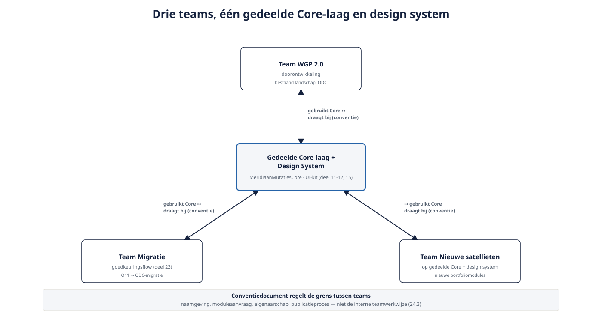

Deel 24 — Multi-team ontwikkeling en het conventiedocument
Slidedeck · Ductus-cursus OutSystems · Niveau 3 — Expert · deel 24 van 30 · 12 slides
Slide 1 — Title: OutSystems: Leidend
OutSystems: Leidend
Deel 24 — Multi-team ontwikkeling en het conventiedocument
Slide 2 — Bullets: Van één team naar meerdere tegelijk
Van één team naar meerdere tegelijk
- Team WGP 2.0-doorontwikkeling
- Team migratie goedkeuringsflow
- Team nieuwe satellieten op gedeelde Core en design system

Slide 3 — Section: Het conventiedocument
Het conventiedocument
Slide 4 — Bullets: Wat impliciet zou blijven, nu expliciet
Wat impliciet zou blijven, nu expliciet
- Naamgevingsconventies
- Wanneer een nieuwe Core-module versus hergebruik
- Eigenaarschap van nieuwe gedeelde entities
- Publicatieproces voor gedeelde libraries
Slide 5 — Statement: Klein beginnen.
Klein beginnen.
Groeien uit echte incidenten.
Slide 6 — Opdracht: Opdracht 24.1 — Hoort dit in het document?
Opdracht 24.1 — Hoort dit in het document?
Drie voorbeelden.
→ Werkboek 24.1
Slide 7 — Table: Wel en niet in het conventiedocument
Wel en niet in het conventiedocument
| Wel | Niet |
|---|---|
| Naamgeving | Module-specifieke technische keuzes |
| Moduleaanvraagproces | Interne teamwerkwijze |
| Eigenaarschapsregels | — |
| Escalatieroute | — |
Slide 8 — Opdracht: Baan A / Baan B
Baan A / Baan B
A — Conventiedocument, O11-deel
B — Conventiedocument, ODC-deel
→ Werkboek, eigen baan
Slide 9 — Statement: Naamgeving: gedeeld.
Naamgeving: gedeeld.
Goedkeuringsproces: platformspecifiek.
Slide 10 — Opdracht: Reflectieopdracht 24.2
Reflectieopdracht 24.2
Waarom klein beginnen, niet vooraf uitputtend?
→ Werkboek 24.2
Slide 11 — Bullets: Kernpunten deel 24
Kernpunten deel 24
- Conventiedocument regelt de grens tussen teams, niet interne werkwijze
- Groeit uit de praktijk, niet uit een vooraf compleet ontwerp
- Naamgeving en eigenaarschapsregels: platformonafhankelijk
- Goedkeuringsproces: expliciet per platform beschreven
Slide 12 — Section: Volgende deel: Licentie- en kostenmodel
Volgende deel: Licentie- en kostenmodel